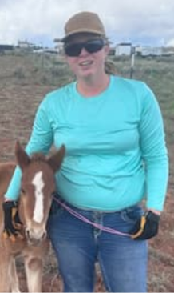

Rebecca S Winder | WDD 130

Hello! My name is Rebecca S Winder, I am from Blanding, Utah. I enjoy gardening, crocheting, reading and creating things.


Hello! My name is Rebecca S Winder, I am from Blanding, Utah. I enjoy gardening, crocheting, reading and creating things.